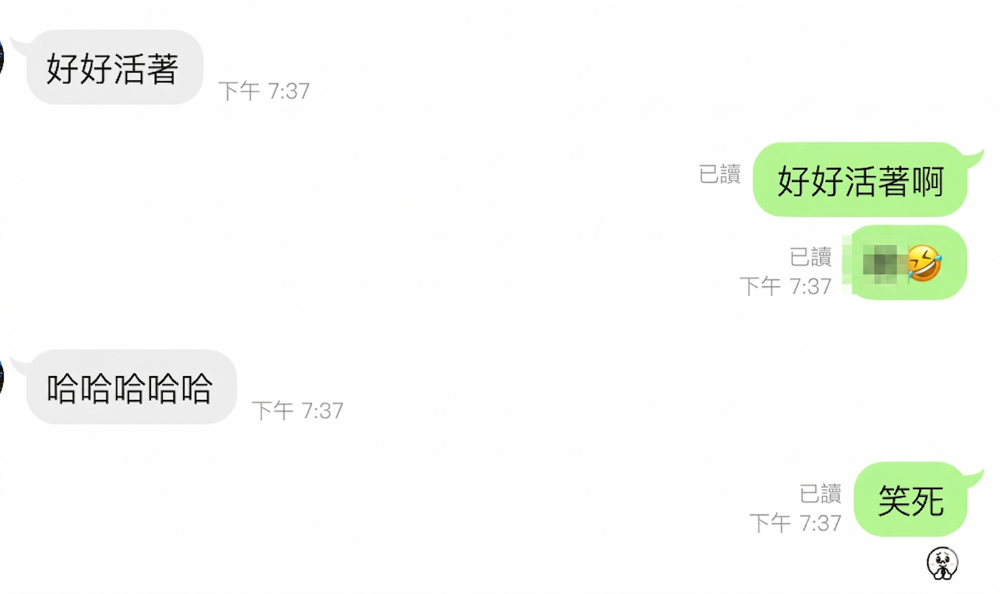

好好活著啊！
【好好活著啊！】
今天在進修課堂上，巧遇了學生時代的老同學。畢業後大家因為各自的人生規劃，散落北中南各地發展；坦白說，開始執業踏入社會後，有時連一句簡單的問候都顯得奢侈。
課堂中途我因為有事必須先離開，想說實在難得，下課後便傳訊跟對方聊了幾句。沒想到瞬間切換回學生時代那種「幹話滿天飛」的溝通模式，絲毫不感陌生，一點生疏感都沒有。
聊到尾聲，心裡想著要請對方多保重身體，因為太熟悉彼此的幹話節奏，下意識就打了「好好活著啊！」這句話。正準備按下送出，沒想到被老同學搶先一步，而且更精簡地用了四個字，回了我不謀而合的默契！
這種互動真的讓人懷念，心底更泛起一陣暖意。人總會長大，各自成家立業，品嚐過生活的百般滋味——那種必須同時兼顧家庭、事業、育兒、進修、長輩與工作的重擔，真的只有親身經歷過才能體會。
走到這個階段，能「好好活著」其實就是一種成功。而無論是哪一種成功，絕對不是單靠一個人的努力就能達成，而是受了許多人的幫助與成全，才能維持當下的和諧狀態。所以，光是能好好活著，就必須感謝好多好多人。
生死從來沒有先來後到的順序，明天與無常永遠不知道誰先報到。能像這樣跟老朋友見個面、拍張照、互相噴個幹話，真的是非常開心且幸福的事。
我們總說過無數次的「下次去南部一定找你」、「下次北上一定去跟你們吃飯」，但就算真的成行，也常因為彼此忙碌而換成一句「下次約」。大家心裡都懂這份成年人的不得已，也只能默默把約定往後延。
人生最珍貴的，莫過於擁有這麼一群人：即便平時沒聯絡，但只要一開口，當年的熟悉感就能無縫接軌。成年人的生活真的很忙碌、很不容易，所以請大家一定要「好好活著」，照顧好自己的身心健康，才能跟這群好麻吉們，繼續履行那無數個「下次約」的承諾。
#好好活著
中醫師 黃彥鈞
